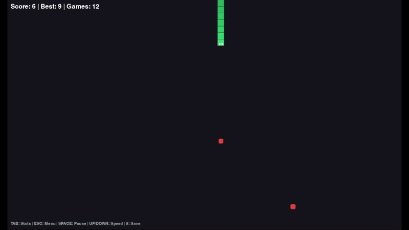

This project was inspired by a chess question which asks how many knights you can fit on a chess board without any of them being able to capture one another.
The answer to that problem is 32, because there are a 64 squares and the way the knight moves makes it land only on opposite colored squares. So 32 knights can sit on all the white or all the black squares and not see any other knight.
This simulation solves that problem for every piece in the game by randomly placing pieces until there are no unattacked spaces left to place a piece. It can also show the distribution of how pieces get placed, show sample solutions, or solve for the fewest number of pieces that can be placed on a chess board.
Shut the Box — Play
Shut the Box is a simple game where you roll two die and have to decide which numbered pins on the box to flip down. The pins you flip down must total the roll on the dice and the goal is to Shut the box, or flip all the pins down.
This program both lets you play the game yourself and lets you simulate a variety of strategies.
Shut the Box — Simulation
This is a demonstration of the program simulating shut the box games.

Snake
This is a Machine learned snake game.
The program also allows you to play a version where two machine-learned snakes compete with one another. Initially I thought this would be an interesting experiment, to watch two snakes learn to try and cut one another off.
Unfortunately, because the apple always spawned closer to one snake or another, the incentive was always for the snake further from the apple to move in circles in a way where it could not be cutoff rather than risk approaching an apple that it would not obtain.
Number Identifier I
This program uses various methods to identify a number based on an image.
The user draws on a tablet to create the number and can select from a variety of models to see what results they give.
Number Identifier II
More exampeles of various models being used for number identification.
The models include a Convolutional Neural Network, which functions best, a Random Forest model, and a K-Nearest Neighbors model.
Minesweeper
Just a simple Minesweeper game.
Space Invaders
This is a video of a pygames version of Space Invaders I made. I enjoy the idea of having a menu and shop where you had to shoot the buttons.
Later game upgrades include a stronger weapon and drones which move back and forth across the screen shooting randomly.